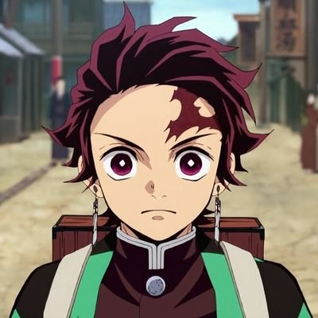
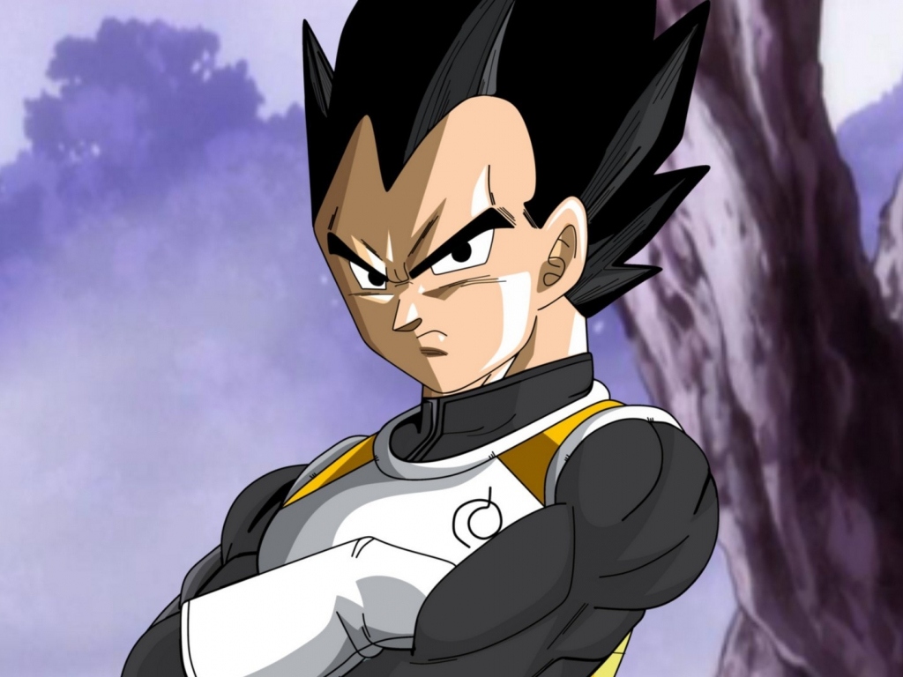

Tanjiro
He is a Demon Slayer in the Demon Slayer Corps, who joined to find a remedy to turn his sister, Nezuko Kamado, back into a human and to hunt down and kill demons, and later swore to defeat Muzan Kibutsuji, the King of Demons, in order to prevent others from suffering the same fate as him.
Last updated 3 mins ago
